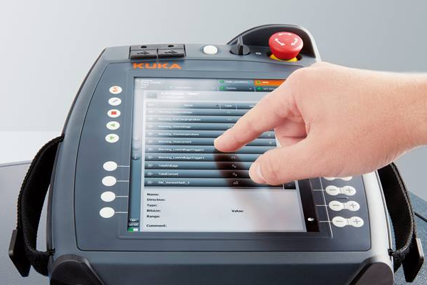
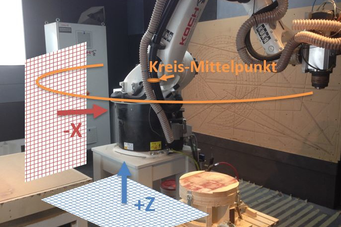
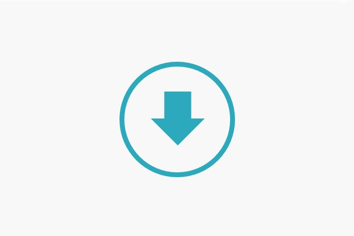

Der Messaufbau

Womit man einen Roboter bedient

Ein Messkonzept

Hochschule: Hochschule Mainz
Studiengang: Geoinformatik und Vermessung (Bachelor)
Betreuer: Prof. Dr.-Ing. Frank Boochs
Firmenname: sigma3D GmbH
Standort: 55130 Mainz
Betreuer: Heiko Paluszek und Martin Lux M.Sc.
Titel: (Weiter-)Entwicklung von Konzepten zur ökonomischen Industrieroboterkalibrierung in Bezug auf ein Basiskoordinatensystem“
Verfasser: Jan-Niklas Weis
Bearbeitungs-Zeitraum: 18.06.2018 bis 27.08.2018
Abb.1: 10-Punkte-Methode
Im ersten Teil der vorliegenden Bachelorarbeit wurden verschiedene Konfigurationen für die Passpunkte zur Lösung der Base und des Tools mittels OpenIndy Plug-in "RoboCalc" getestet
Anhand der Ergebnisse wurde das bestehende Messkonzept ergänzt und auch validiert. Dabei ergaben sich interessante Erkenntnisse vor allem bezüglich Punktanzahl und Punktverteilung.
Verglichen werden die simultan erhaltenen Ergebnisse von Base und Tool mit wenige Zenhtel Millimeter genauen Referenz-Daten. Ein guter Workflow zur Base-Kontrolle wurde ebenfalls gefunden.
Optimierung der 10-Punkte-MethodeAbb.2: Messprinzip Kinematische Base
Im Zuge der Messungen wurde eine neue Strategie zur Bestimmung der Base erdacht. Trotz guter Durchführbarkeit und Genauigkeit liegt ihr größter Nachteil in der Notwendigkeit eines bestimmten Tools.
Die Vorgabe einer simmultanen Bestimmung konnte deshalb nicht eingehalten werden. Jedoch stellt die Methodik eine gute Alternative zu anderen behandelten Methoden dar, die ebenfalls ausschließlich die Base bestimmen.
Entwicklung eines Messkonzepts zur Base-BestimmungAbb.3: Verschiedene Gewichtskonstellationen
Zum Schluss der Arbeit wurde untersucht, welche Rolle verschiedene Werkzeuggewichte bei der Industrieroboterkalibrierung spielen. Der Einfluss war vielen Anwendern nicht bekannt und die erzielten Erkenntnisse sollen zur Aufklärung beitragen.
So ergaben sich gravierende Abweichungen bei Nichtbeachtung der korrekten Tooldaten. Ihre Bestimmung und Eingabe ist deshalb zwingend zu empfehlen.
Detektion des Gewichtseinflusses auf BaseCopyright © 2018 Jan-Niklas Weis